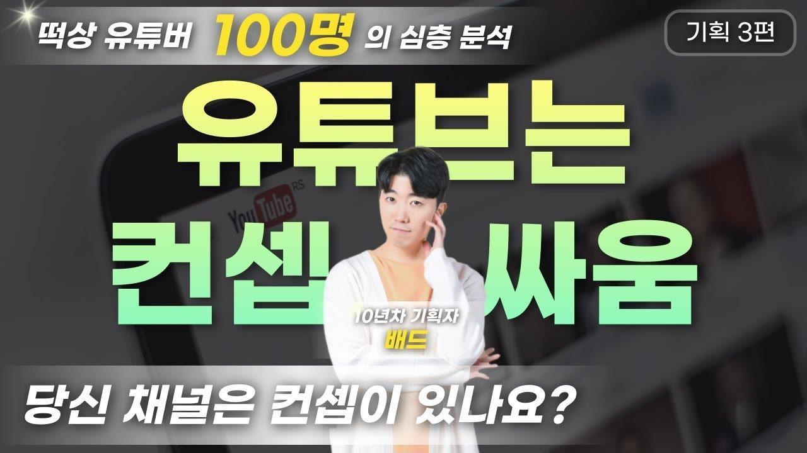
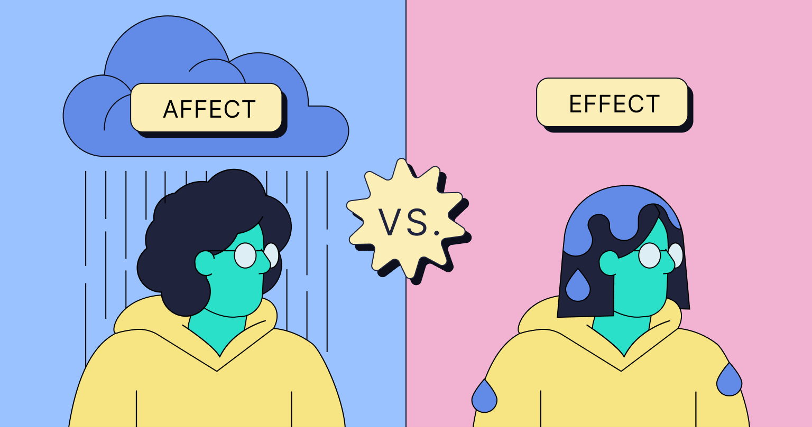
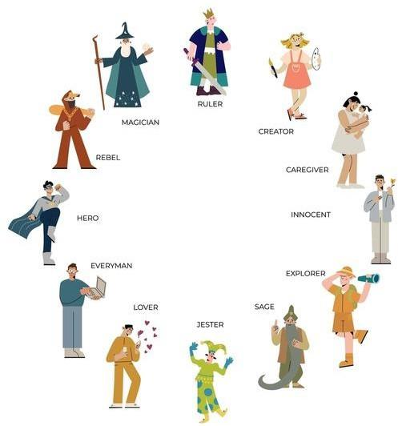
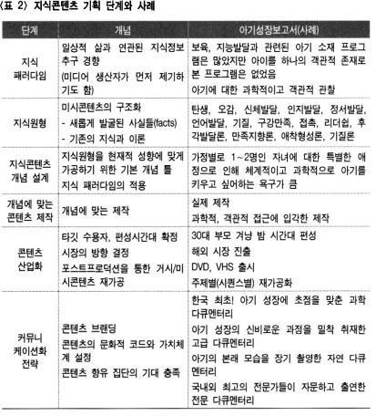
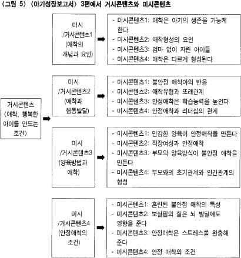

1. 1인미디어 기획: 나는 무엇을 말할 수 있는가?

영상콘텐츠 기획: 컨셉
왜 별볼일 없는 영상이 대박을 터트리는가?
왜 어마어마한 비용을 들인 콘텐츠가 망하는가?
모든 창작의 출발점, 컨셉(ft. affect)
무엇이 콘텐츠를 주목받게 하는가? '차별적인 콘텐츠'를 어떻게 만들 것인가? 창작이 산업이 된 시대, 그것은 컨셉의 문제!!
So, 다시 한번 컨셉이란?!
"전체를 관통하는 새로운 관점"
"문화원형의 '현재적 상태'를 정의하는 것"
왜??? 콘텐츠(주제, 캐릭터, 정보 등)가 (언젠가) 시청자의 정동을 자극하기 때문 (콘텐츠와 이용자와의 관계맺기)
성공하는 컨셉의 요건
문화원형(archetype) 이론(by Jung): 개인의 기능에 영향을 미치는 심리의 매듭점, 집단무의식, 심리적 경향성, 인류의 계통발생적이고 본능적인 기초, 유전적 성향을 띰, 그 콘텐츠가 실행하는 인간 본연의 욕망
나는 어떤 컨셉의 사람인가?: identity의 문제?
Affect - Emotion - Effect

AFFECT
- *비를 맞다
- 에너지
- 나를 격동시키는 것
- 창조적 힘의 잠재태
- 전의식적 강렬도
EMOTION
- *즐거움, 짜증
- 기본감정 (기쁨, 슬픔, 분노, 두려움, 혐오, 놀람)
- positive/negative
EFFECT
- *젖음, 감기
- 시청률
- 지지율
- 구매력
- 구독수/조회수
유튜브 콘텐츠 기획: 컨셉 잡기의 실제
1) 대의명분 컨셉 - 정당성
- 내 채널만의 차별점, 사회적 기여, 미학적 우수성
- 개별 콘텐츠에서 그런 대의명분이 느껴져야 함
2) 구원자 컨셉 - 욕망
- 솔루션, 카리스마, 자기증명, 타인증명
- 본인 또는 게스트를 통한 욕망 해결
3) 의외성(반전매력) 컨셉 - 매력
- 클리셰 부수기, 반전 매력
- 욕하는 학원강사, 특전사 출신 주부
4) 스피커 컨셉 - 공감
- 인간 본연의 감성을 공유하도록 표현
- 이 시대 마음의 상처는 무엇인가?
"전체를 관통하는 새로운 관점"
"문화원형의 '현재적 상태'를 정의하는 것"
구독의 이유 by 배드BAD (기획자의 유튜브 사용설명서)
- 리더(따르고 싶은 사람): 백종원, 피지컬갤러리, 슈카, 양킹
- 친구(친해지고 싶은 사람): 침착맨, 피식대학, 알간지
- 연인/가족(사귀고 싶은 사람): 순자엄마??
프로기획자가 알려주는 유튜브 컨셉 만드는 법 (컨셉방법론)
영상콘텐츠 기획: 컨셉으로서 문화원형

12 Archetypes
- Caregiver
- Supportive (not main) character who makes sacrifices for the good of others.
- Creator
- Visionary who creates something of high importance.
- Everyperson
- Average and easy to relate to; somebody you'd meet in normal, daily life.
- Explorer
- Desire to go beyond boundaries and explore the unknown.
- Hero
- Lead character who rises to the challenge.
- Innocent
- Pure in intentions and morality.
- Jester
- Sometimes provides wisdom, but is usually around for comedy and humor.
- Lover
- Follows their emotion, heart and passion.
- Magician
- Powerful; understands the forces of the universe and knows how to use them.
- Outlaw
- Lives outside society's demands; rebellious.
- Ruler
- Rules over others, either emotionally or legally.
- Sage
- Has a lot of knowledge and wisdom; often acts as a mentor.
In literature, an archetype is a character that has a specific set of traits or qualities that are easy for the reader to identify.
문화원형에서 커뮤니케이션 전략까지
@임종수(2006)

서사의 에너지 → 컨셉의 출발 → 오리지널 콘텐츠(거시콘텐츠) → Mash-up 콘텐츠(미시콘텐츠)
컨셉, 거시콘텐츠 & 미시콘텐츠(쇼츠)
@임종수(2006)

1인미디어 채널 분야
취미 #개인적 #특정분야
게임, 건강&운동, 자동차&탈것, 음악, 춤, 기타취미
개인의 일상 #개인적 #특정소재 #장소
일상브이로그, 가족, 어린이, 동물, 먹방, 여행, 라이프스타일
정보공유 #정보형오리지널
요리/쿡방, 뷰티, 패션, 디자인/미술, 뉴스·정치·주장, 전문지식, 교육, 제품/서비스소개, How-To/DIY
오리지널 #오락형오리지널
스포츠, 코미디, 장난/도전, 시각적마술, 음모론&괴담, 웹드라마&웹예능, 애니메이션, 오디오엔터테인먼트, 심리적안정/OSV/ASMR
레거시 콘텐츠 기반 #레거시콘텐츠
콘텐츠리뷰, 클립, 예고편영상, 광고/홍보영상
@이주현·디바제시카(2023), 159쪽
1인미디어 채널 기획하기: 기획안 작성
| 항목 | 설명 |
|---|---|
| 채널명 | 대중적이면서 독창적인 id |
| 채널분야 | 정체성과 방향성 |
| 문화원형 | 12개의 문화원형 또는 그 무엇 |
| 목표구독자 | 세대, 성, 지역(언어) 등을 고려 |
| 업로드주기 | 자신의 능력과 대중적 반응을 고려 |
| 제작방법 | 스튜디오, 현장, 인터뷰, VR, AI 등에 대한 기술과 노하우 |
| 기획의도 | 국내외 환경분석 및 문화원형, 컨셉 풀이 |
| 포맷(기획의 포인트) | 내용의 줄기, 간략구성, 캐릭터, 재미, 감동, 웃음의 지점 |
| 로그라인 | 채널의 컨셉과 포맷을 한마디로 정의 |
| 레퍼런스 콘텐츠 또는 채널 | 참고자료, 유사성과 차별성 |
| 마케팅 포인트 | 프로모션, 수익모델 |
1인미디어 콘텐츠 기획하기: 구성안 작성
구성안 항목
- 채널명: identity가 드러나는 대문
- 카테고리: 재생목록상의 하위분류
- 콘텐츠명: 개별 콘텐츠의 제목
- 키워드: 해시태그
- 편성: 회차, 일자, 요일, 시간
- 구성의 3요소: 내용, 비디오, 오디오 by 시간
| 채널명 | 카테고리 | 콘텐츠명 | 제작자 | 키워드 | 편성(회차/일자/요일/시간) |
|---|---|---|---|---|---|
| 구분 | 내용 | 비디오 | 오디오 |
|---|---|---|---|
| 인트로(분) | |||
| 타이틀(분) | |||
| 발단(분) | |||
| 미시콘텐츠1(분) | |||
| 미시콘텐츠n(분) | |||
| 결말(분) |